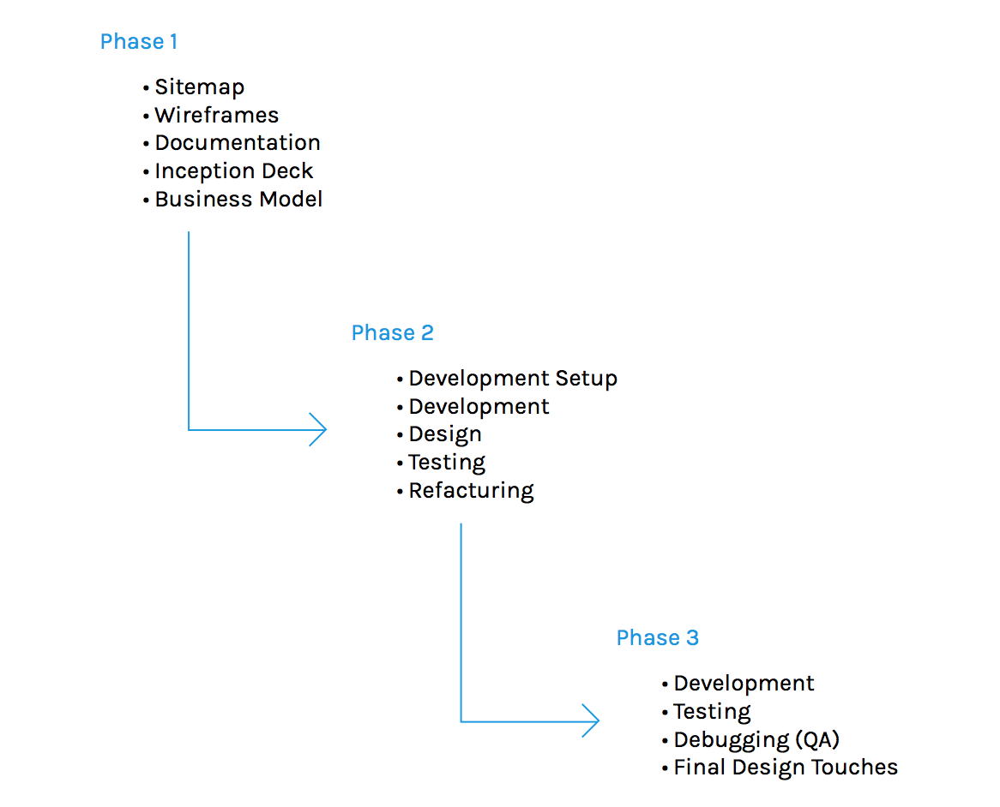
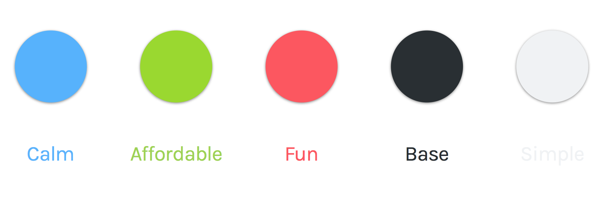
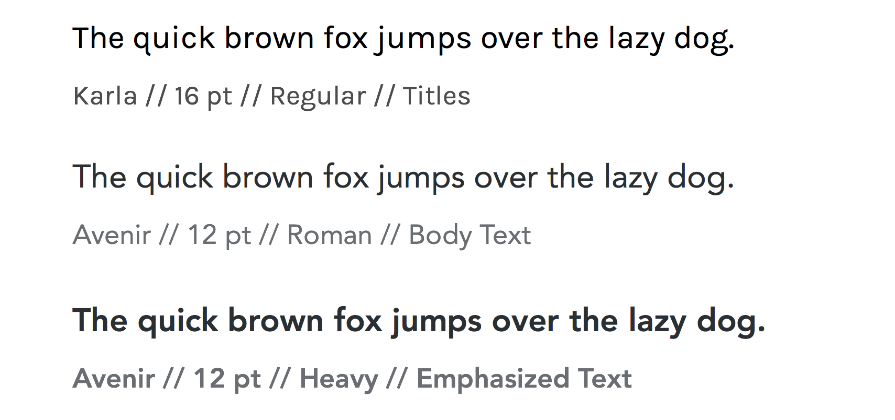

Summary
The Challenge
To create a delivery application that truly understands the demands of a busy life. Recognizing the universal struggle of juggling daily tasks, I envisioned 'Speedy' – a solution designed to reclaim valuable time.
My concept was to put the power of on-demand delivery directly at the user's fingertips. Whether it's fitting in that crucial meeting or managing school pickups, Speedy aims to be the reliable partner that streamlines errands.
Speedy isn't just about convenience; it's about empowerment. By providing a seamless way to get things done, I’m giving users back their most precious resource: time. My goal was to create an application that feels like a personal assistant, efficiently handling deliveries so that users can navigate their day with greater ease and less stress.
Planning
Planning is one of my favorite parts of the process. I really enjoy sitting down, clearing my head and getting my thoughts out on pen and paper. Despite this being my first delivery app, the inherent challenges of creating a seamless user experience made the planning stage very engaging and rewarding :)
Sketching
From the start, I focused on establishing a clear information architecture. Outlining the necessary pages and their intended purpose helped me create a logical and intuitive user flow. So, I mapped out all the screens and what they'd do, and once I had that down, sketching out my ideas became much easier. It was like having a roadmap already in place!
Project Phases
With the phases, I tried to break up my time into chunks and determine what would happen where. This helped with keeping me accountable to deadlines which kept the process moving.

Sitemap
Desktop v1
Description
The first desktop iteration of Speedy aimed to clearly demonstrate its core functionality and user onboarding process. The primary goal was to provide an initial understanding of the service and how users could sign up.
Here's a prototype
Colors

Typography

Desktop v2
After the initial desktop version of Speedy, the feedback was clear: simplicity is key. Even though it felt relatively straightforward, I saw an opportunity to make the experience even smoother. It was like, 'Okay, how can we make this super easy?'
My approach was to streamline the visual language and the user journey. I decided to anchor the design with a consistent 'blue' – creating a sense of unity and focus. The navigation got a trim, keeping only the essentials front and center. But the biggest shift was in the sign-up flow. I reimagined it as a single, direct path, eliminating any potential for confusion. It was all about making that first step as effortless as possible. The result? A cleaner, more intuitive experience, all wrapped in that calming blue.


{kind=link}
{kind=link}
{kind=link}
{kind=link}
{kind=link}
{kind=link}
{kind=link}
{kind=link}
{kind=link}
Mobile
Through further iterations and valuable feedback, Speedy really started to find its groove, evolving into what I feel is its strongest form. You'll immediately notice a shift towards a more minimalist aesthetic – sometimes less really is more, right?
Oh and yes, we said goodbye to all that blue. It started feeling a bit much, and green just felt like the right move. It brings this vibe of growth and freshness, but even more importantly for Speedy, it conveys a sense of safety. We really want users to feel comfortable and secure when they're using the app, and the green seemed to achieve just that.
Live:
Speedy is now live (but still under construction, production-wise) here and was made with Vue.js. You can check out the repo here.